Renesansa
Renesansa u umjetnosti bila je kulturni preporod koji se razvio u Evropi od 14. do 16. stoljeća. Naglasak je
stavljen na povratak antičkim idealima ljepote, harmonije i proporcije, uz snažno zanimanje za čovjeka i
prirodu. Umjetnici su razvili tehniku perspektive, što je omogućilo realističniji prikaz prostora i figura.
Djela su bila prožeta humanizmom, a poznati majstori poput Leonarda da Vincija, Michelangela i Rafaela
stvarali su remek-djela koja spajaju nauku, filozofiju i umjetnost.
Pregled ključnih djela renesanse
Tabela ispod prikazuje pet najznačajnijih djela ovog perioda sa tehničkim detaljima.
| Slika |
Ime umjetnika |
Period |
Tehnika |
| Mona Lisa |
Leonardo da Vinci |
Visoka renesansa |
Ulje na dasci topole |
| Stvaranje Adama |
Michelangelo Buonarroti |
Visoka renesansa |
Freska |
| David |
Michelangelo Buonarroti |
Visoka renesansa |
Direktno klesanje (bez prethodnog detaljnog modela) |
| Atenska škola |
Rafael |
Visoka renesansa |
Freska |
| Posljednja večera |
Leonardo da Vinci |
Visoka renesansa |
Tempera i ulje na gipsu |
Detaljni opis i značaj odabranih djela
U nastavku su predstavljena ključna djela koja su definisala renesansnu umjetnost.
Mona Lisa (Leonardo da Vinci)
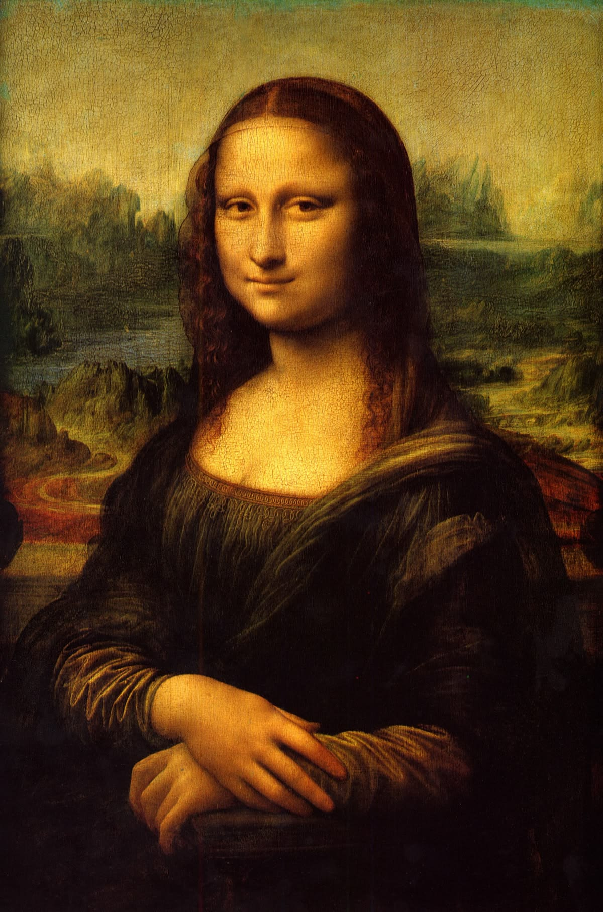
Opis i značaj: Najpoznatiji portret na svijetu, poznat po zagonetnom osmijehu.
Značajna je zbog upotrebe sfumato tehnike (meki prelazi između boja) i postavljanja
modela u tričetvrtinsku profilnu pozu, što je postalo standard u zapadnoj umjetnosti.
Stvaranje Adama (Michelangelo)

Opis i značaj: Dio ciklusa na tavanici Sikstinske kapele. Slika prikazuje
trenutak u kojem Bog udahnjuje život prvom čovjeku. Centralni motiv dodira prstiju postao je
simbol ljudske povezanosti sa božanskim i vrhunac renesansnog antropocentrizma.
David (Michelangelo)
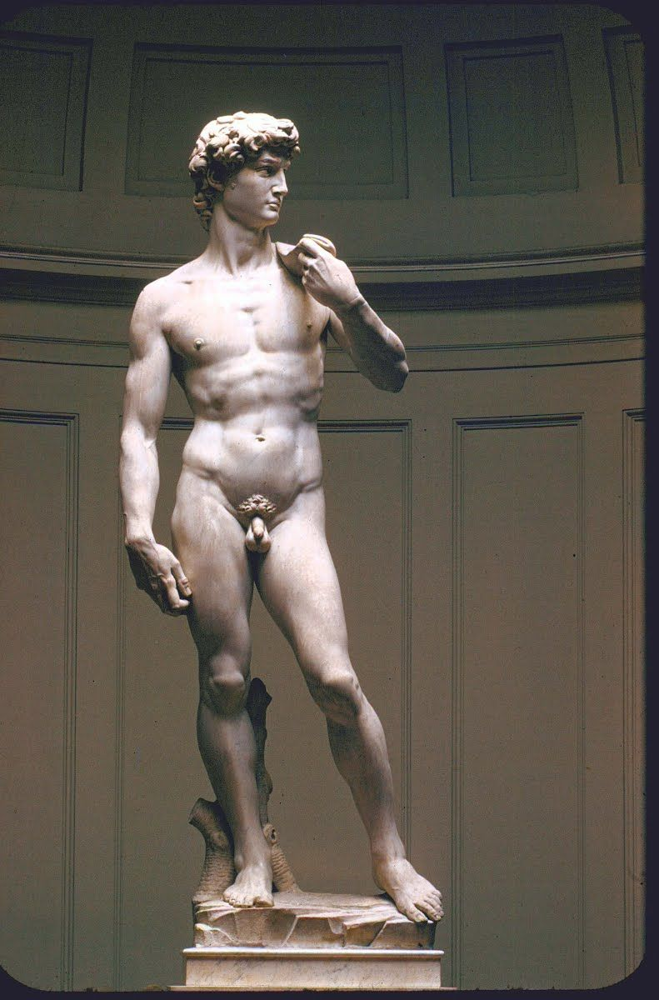
Opis i značaj: Remek-djelo kiparstva koje predstavlja biblijskog junaka u
trenutku prije bitke sa Golijatom. Skulptura simbolizira firentinsku slobodu i savršenstvo
ljudske anatomije, što je bio ključni fokus renesansnih umjetnika.
Posljednja večera (Leonardo da Vinci)

Opis i značaj: Ova freska istražuje psihološku reakciju apostola u trenutku kada
Isus najavljuje izdaju. Ključna je zbog savršene linearne perspektive gdje se sve linije sustiču
u Isusovoj glavi, fokusirajući posmatrača na centar kompozicije.
Atinska škola (Rafael)

Opis i značaj: Freska koja slavi razum i filozofiju. Prikazuje najveće umove
antike (Platona, Aristotela i druge) u grandioznom arhitektonskom okruženju. Smatra se vrhuncem
harmonije i balansa Visoke renesanse.
Povratak na ostale pravce
Barok
Barok u umjetnosti razvio se u Evropi od kraja 16. do sredine 18. stoljeća i obilježen je dinamikom,
dramatičnošću i bogatstvom detalja. Umjetnici su koristili snažne kontraste svjetla i sjene
(chiaroscuro), pokret i emociju kako bi stvorili dojmljive i teatralne prizore. Djela su često imala
religioznu ili monumentalnu tematiku, s ciljem da zadive i potaknu osjećaje kod posmatrača. Među
najpoznatijim baroknim majstorima izdvajaju se Caravaggio, Peter Paul Rubens, Gian Lorenzo Bernini i
Rembrandt, čija su djela spoj vjere, moći i umjetničke virtuoznosti.
Predstavnici baroka i njihova remek-djela
Barokna umjetnost prepoznatljiva je po dramatičnosti, snažnom kontrastu svjetla i sjene (chiaroscuro) te
intenzivnim emocijama.
- Johannes Vermeer
- Djevojka s bisernom naušnicom
- Diego Velázquez
- Artemisia Gentileschi
- Judita odsijeca glavu Holofernu
- Gian Lorenzo Bernini
- Rembrandt van Rijn
Detaljni opis i značaj odabranih djela
U nastavku su predstavljena ključna djela koja su definisala barok kao umjetnički pravac
Djevojka sa bisernom naušnicom (Johannes Vermeer)
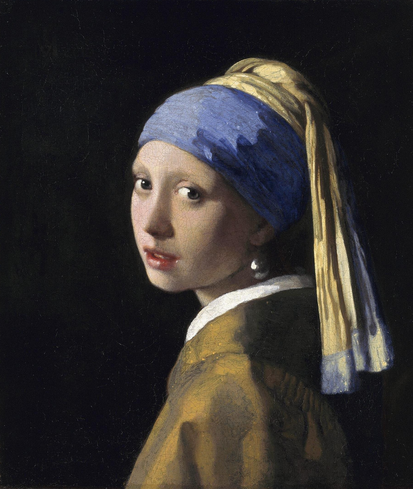
Opis i značaj: Često nazivana "Mona Lisom sjevera", poznata po majstorskom
prikazu refleksije svjetlosti na biseru.
Las Meninas (Diego Velázquez)

Opis i značaj: Kompleksna kompozicija koja preispituje odnos između posmatrača,
umjetnika i kraljevske porodice.
Judita odsijeca glavu Holofernu (Artemisia Gentileschi)

Opis i značaj:Snažan i realističan prikaz biblijske priče, karakterističan po
ekstremnom tenebrizmu i ženskoj snazi.
Zanos svete Tereze (Gian Lorenzo Bernini)

Opis i značaj:Vrhunac baroknog kiparstva koji spaja arhitekturu, skulpturu i
prirodno svjetlo u jedinstven teatralni doživljaj.
Noćna straža (Rembrandt van Rijn)

Opis i značaj: Grupni portret poznat po dinamičnosti i inovativnoj upotrebi
svjetla koja stvara osjećaj pokreta u masi vojnika.
Povratak na ostale pravce
Impresionizam
Impresionizam se pojavio u Francuskoj tokom druge polovine 19. stoljeća i obilježen je težnjom da se
uhvati trenutni dojam svjetlosti, boje i atmosfere. Umjetnici su napustili stroge akademske norme i
počeli slikati na otvorenom (en plein air), koristeći brze poteze kista i svijetlu paletu kako bi
prenijeli promjenjivost prirode. Umjesto detaljnog realizma, fokusirali su se na subjektivni doživljaj
prizora. Najpoznatiji impresionisti bili su Claude Monet, Pierre-Auguste Renoir i Edgar Degas, čija
djela odišu svježinom i spontanošću, naglašavajući ljepotu svakodnevnih trenutaka.
Predstavnici impresionizma i njihova remek-djela
- Claude Monet
- Impresija - izlazak sunca
- Lopoči
- Édouard Manet
- Pierre-Auguste Renoir
- Bal u Moulin de la Galette
- Edgar Degas
Detaljni opis i značaj odabranih djela
U nastavku su predstavljena ključna djela koja su definisala impresionizam kao umjetnički pravac
Impresija - izlazak sunca (Claude Monet)
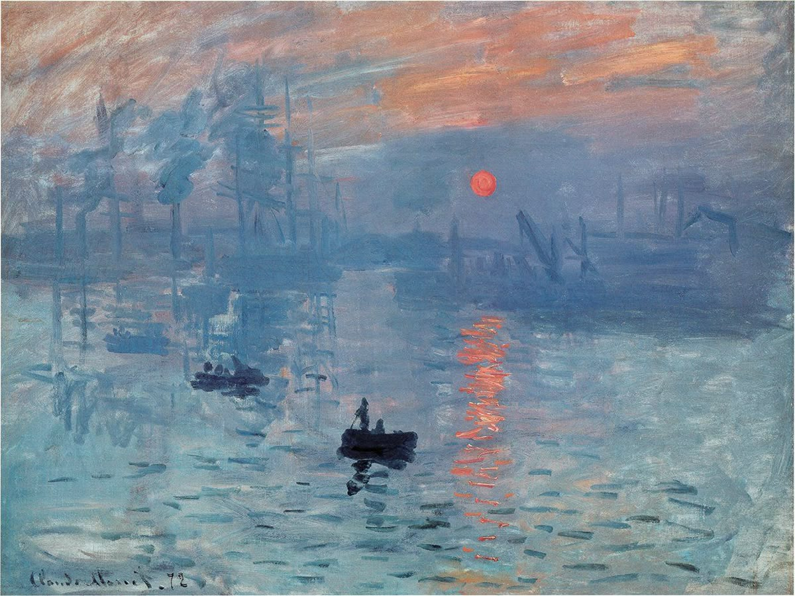
Opis i značaj: Djelo koje je dalo ime cijelom pravcu. Monet je hvatao trenutni
dojam svjetlosti i atmosfere, što je postalo temelj impresionizma.
Lopoči (Claude Monet)
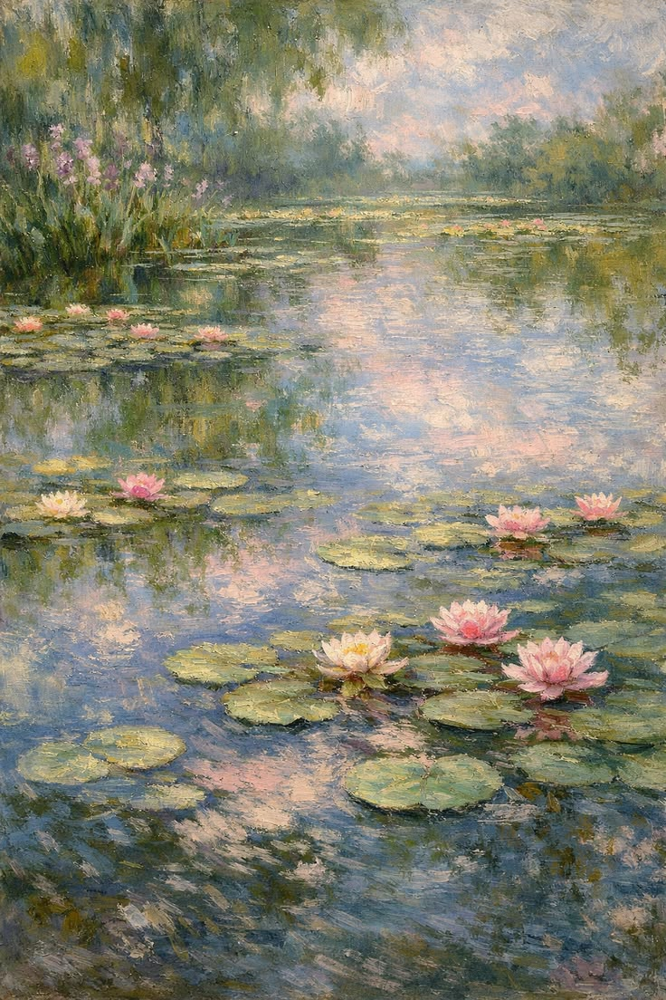
Opis i značaj: Serija slika koje istražuju refleksiju svjetlosti i boja na vodi.
Pokazuje Monetovu opsesiju prirodnim svjetlosnim efektima i prelazak prema apstrakciji.
Doručak na travi (Édouard Manet)

Opis i značaj:Skandaliziralo javnost jer je prikazalo golu ženu u društvu
odjevenih muškaraca. Važno kao prijelaz iz realizma u impresionizam i rušenje akademskih
pravila.
Bal u Moulin de la Galette (Pierre-Auguste Renoir)

Opis i značaj:Prikaz pariškog društvenog života, pun pokreta i svjetlosti. Slika
odiše veseljem i atmosferom svakodnevnog života, tipičnim za impresionizam.
Baletne plesačice (Edgar Degas)
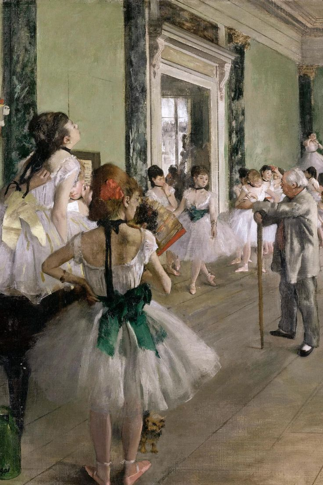
Opis i značaj: Degas je bio fasciniran pokretom i svakodnevnim prizorima.
Njegove balerine prikazuju dinamiku, eleganciju i igru svjetlosti, ali s naglaskom na
kompoziciju i crtež.
Povratak na ostale pravce
Postimpresionizam
Postimpresionizam je umjetnički pravac koji se razvio krajem 19. stoljeća, nakon impresionizma.
Umjetnici su zadržali interes za boju i svjetlost, ali su išli dalje – naglašavali su individualni stil,
simboliku i strukturu kompozicije. Za razliku od impresionista, postimpresionisti nisu samo bilježili
trenutni dojam, nego su tražili dublje značenje i osobni izraz. Najpoznatiji predstavnici su Van Gogh,
Gauguin, Cézanne i Seurat.
Predstavnici postimpresionizma i njihova remek-djela
- Vincent van Gogh
- Georges Seurat
- A Sunday Afternoon on La Grande Jatte
- Paul Gauguin
- Odakle dolazimo? Što smo? Kuda idemo?
- Paul Cézanne
Detaljni opis i značaj odabranih djela
U nastavku su predstavljena ključna djela koja su definisala postimpresionizam kao umjetnički pravac
Zvjezdana noć (Vincent van Gogh)

Opis i značaj: Jedno od najpoznatijih djela u povijesti umjetnosti. Dinamični
vrtlozi neba i intenzivne boje odražavaju Van Goghovu emocionalnu i psihološku napetost.
Suncokreti (Vincent van Gogh)
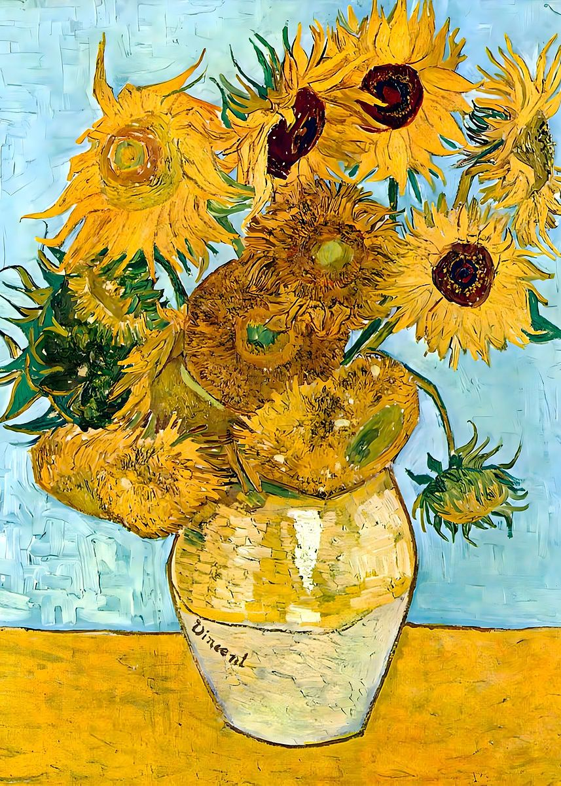
Opis i značaj: Serija slika koja simbolizira život, energiju i prolaznost. Postala je ikona Van Goghovog stila i njegovog istraživanja boje i teksture.
A Sunday Afternoon on La Grande Jatte (Georges Seurat)

Opis i značaj:Ključno djelo neoimpresionizma/pointilizma. Seurat je koristio znanstveni pristup boji i optičkim efektima, stvarajući monumentalnu kompoziciju građanskog života.
Odakle dolazimo? Što smo? Kuda idemo?(Paul Gauguin)

Opis i značaj:Filozofsko i simboličko djelo koje prikazuje ciklus ljudskog života kroz polinezijske figure. Smatra se Gauguinovim remek-djelom i manifestom njegovog simbolizma.
Mont Sainte-Victoire (Paul Cézanne)
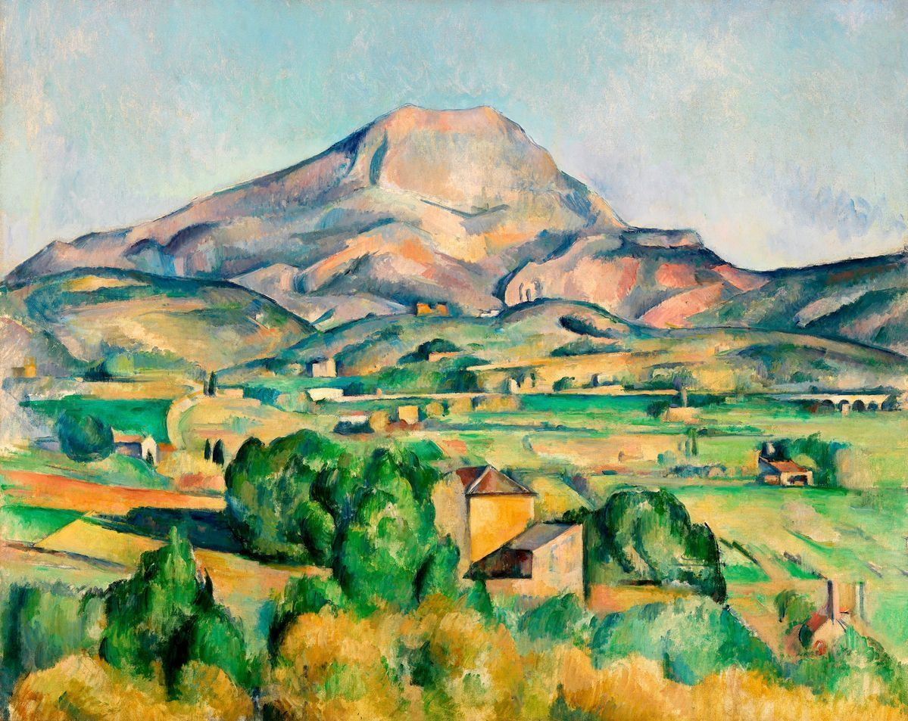
Opis i značaj: Cézanne je kroz seriju slika ove planine istraživao strukturu prirode i prelazak prema modernoj apstrakciji. Njegov rad je bio ključan za razvoj kubizma.
Povratak na ostale pravce
Ekspresionizam
Ekspresionizam je umjetnički pravac s početka 20. stoljeća koji je nastao kao reakcija na industrijalizaciju i otuđenje modernog društva. Umjetnici su naglašavali emocije, unutarnja stanja i subjektivni doživljaj, često kroz deformirane oblike i jarke kontrastne boje. Cilj nije bio prikazati stvarnost, nego unutarnju istinu i psihološku napetost.
Predstavnici ekspresionizma i njihova remek-djela
- Edvard Munch
- Vrisak
- Madonna
- Separation
- Ernst Ludwig Kirchner
- Franz Marc
Detaljni opis i značaj odabranih djela
U nastavku su predstavljena ključna djela koja su definisala ekspresionizam kao umjetnički pravac
Vrisak (Edvard Munch)

Opis i značaj: Ikona modernog slikarstva. Simbolizira egzistencijalni strah i tjeskobu, s dramatičnim bojama i valovitim linijama koje odražavaju unutarnji nemir.
Madonna (Edvard Munch)
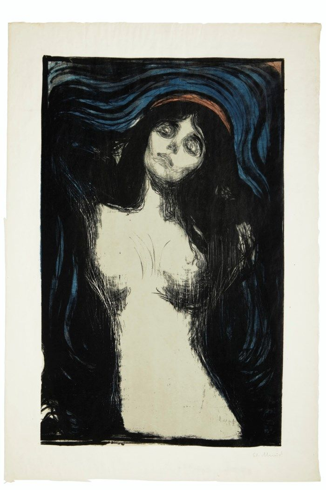
Opis i značaj: Prikazuje ženu u erotsko-mističnom zanosu. Djelo spaja ljepotu i tjeskobu, naglašavajući Munchovu opsesiju životom, ljubavlju i smrću.
Separation (Edvard Munch)
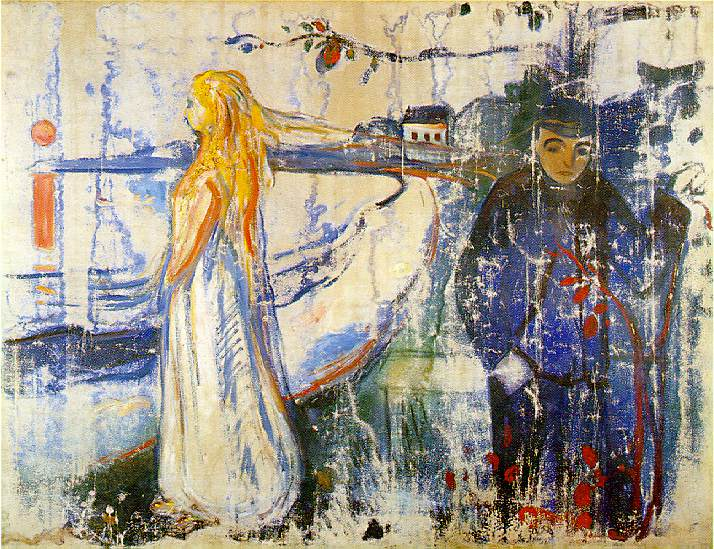
Opis i značaj:Kontrast svjetla i tame, unutarnja emocionalna napetost; tipičan primjer Munchovog psihološkog ekspresionizma.
Ulica u Berlinu (Ernst Ludwig Kirchner )

Opis i značaj:Prikaz urbanog života kroz deformirane figure i jarke boje. Djelo odražava otuđenje i napetost modernog grada.
Plavi konj (Franz Marc)
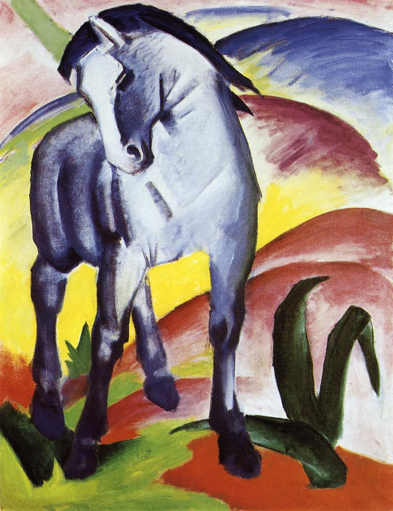
Opis i značaj: Simbolična upotreba boje i životinjskih motiva. Konj u plavoj boji predstavlja duhovnost i čistoću, a djelo je ključno za grupu „Der Blaue Reiter“.
Povratak na ostale pravce
Moderna umjetnost
Moderna umjetnost obuhvata razne pravce od kraja 19. do sredine 20. stoljeća, gdje se umjetnici odmiču od realizma i traže novi jezik izraza. Naglasak je na apstrakciji, eksperimentu i slobodi forme, a djela često ruše tradicionalna pravila perspektive i kompozicije. Pravci poput kubizma, De Stijla, apstraktnog ekspresionizma i nadrealizma obilježili su ovu epohu.
Predstavnici moderne umjetnosti i njihova remek-djela
- Piet Mondrian
- Kompozicija s crvenim, žutim i plavim
- Wassily Kandinsky
- Pablo Picasso
- Guernica
- Gospođice iz Avignona
- Salvador Dalí
Detaljni opis i značaj odabranih djela
U nastavku su predstavljena ključna djela koja su definisala modernu umjetnost
Kompozicija s crvenim, žutim i plavim (Piet Mondrian)
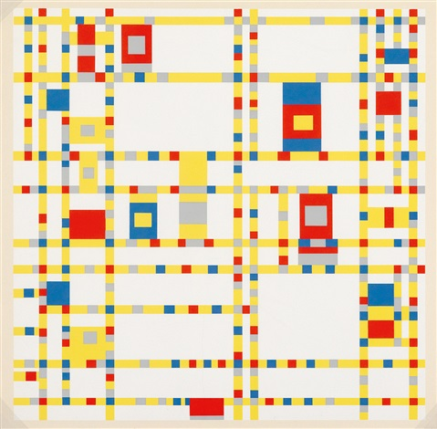
Opis i značaj:Djelo De Stijl pokreta. Mondrian koristi osnovne boje i geometrijske linije da izrazi univerzalnu harmoniju i ravnotežu.
Kompozicija VIII (Wassily Kandinsky)
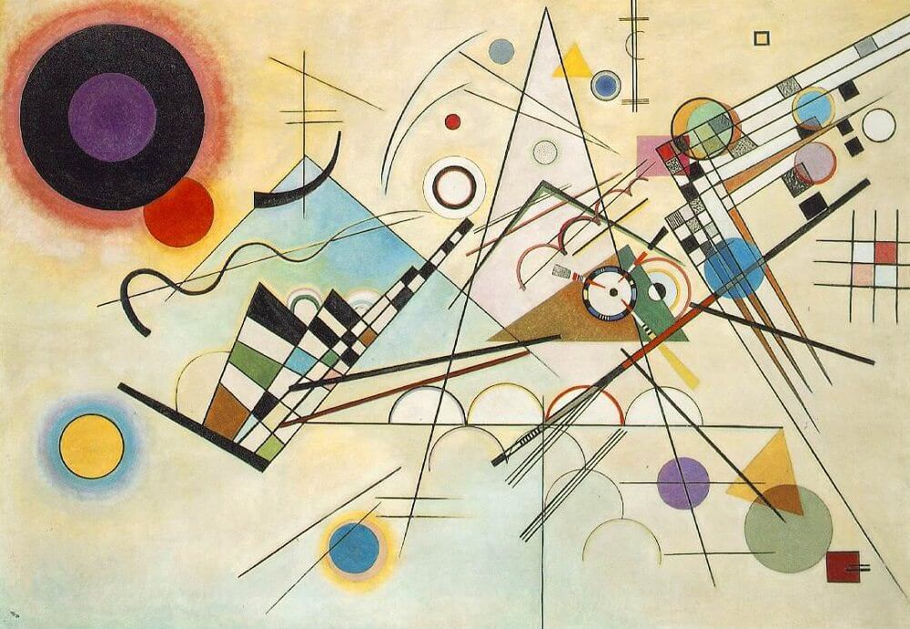
Opis i značaj: Kandinsky je pionir apstrakcije. Ovdje koristi boje i geometrijske oblike da izrazi muzikalnost i unutarnje emocije, bez potrebe za realističnim prikazom.
Guernica (Pablo Picasso)

Opis i značaj:Monumentalno djelo protiv rata. Prikazuje strahote bombardiranja Guernice kroz deformirane figure i simboliku, postalo univerzalni anti-ratni simbol.
Gospođice iz Avignona (Pablo Picasso)
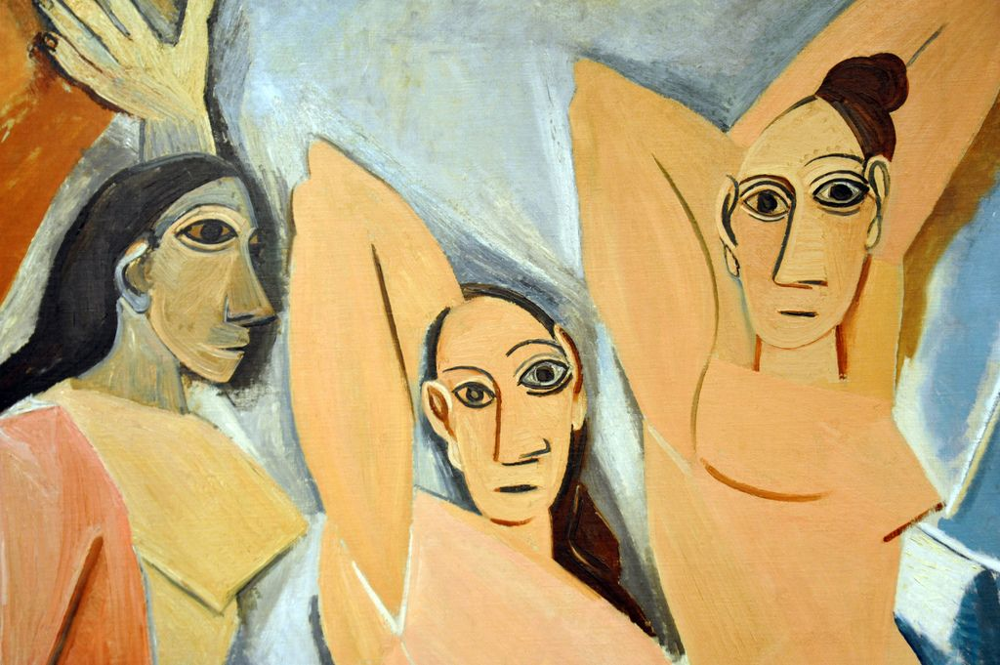
Opis i značaj:Ključno djelo kubizma. Razbija tradicionalnu perspektivu i prikazuje figure kroz fragmentirane geometrijske oblike.
Postojanost pamćenja (Salvador Dalí)

Opis i značaj: Ikona nadrealizma. Poznata po „otopljenim satovima“, istražuje subjektivnost vremena i snove kao umjetnički prostor.
Povratak na ostale pravce